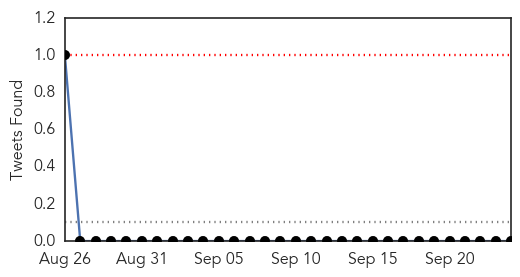
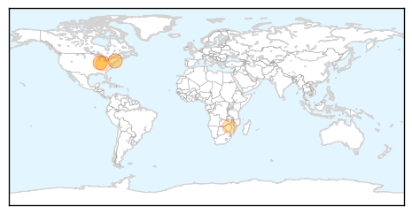

MERS
30-Day Web Trend
0 alerts, 0 warnings

30-Day Twitter Trend
0 alerts, 0 warnings

Article Locations

Article Confidences

Top Articles:
-
No articles found for Sep 24, 2015
Top Tweets:
-
No tweets found for Sep 24, 2015
West Nile Virus
30-Day Web Trend
0 alerts, 0 warnings

30-Day Twitter Trend
0 alerts, 0 warnings

Article Locations
Article Confidences

Top Articles:
- 0.976
- West Nile Virus Claims Second Indiana Victim
- 0.964
- West Nile Virus Found in Huntington
- 0.955
- EEE virus found in Vermont mosquito
- 0.855
- CHD: 2 more batches of mosquitoes test positive for West Nile Virus
- 0.802
- Shelton Resident Infected with West Nile Virus
- 0.727
- 5 Human Cases of West Nile Virus Reported in Connecticut
- 0.725
- State reports Indiana’s 2nd West Nile virus human fatality
Top Tweets:
-
No tweets found for Sep 24, 2015